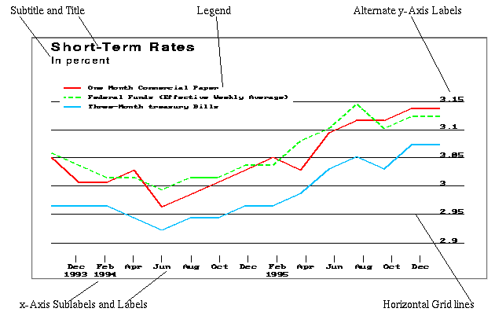
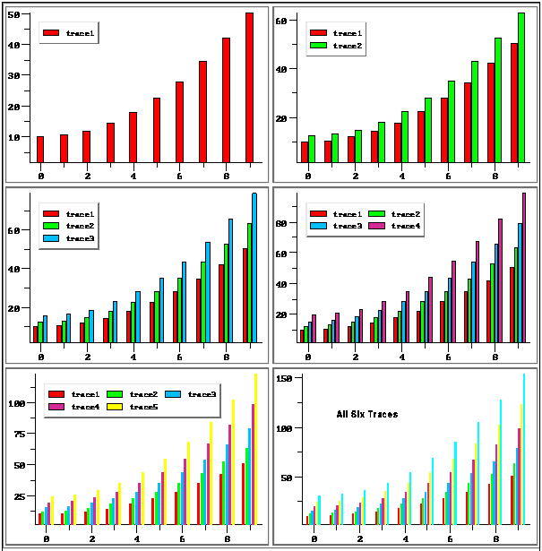
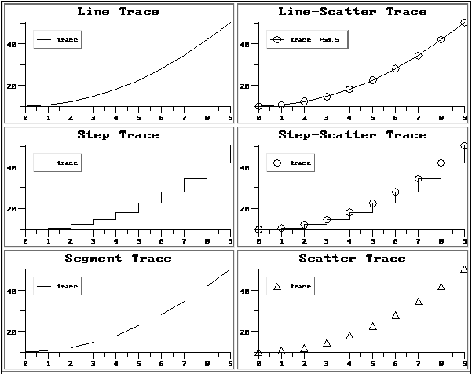
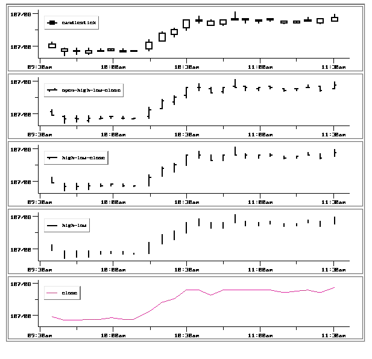
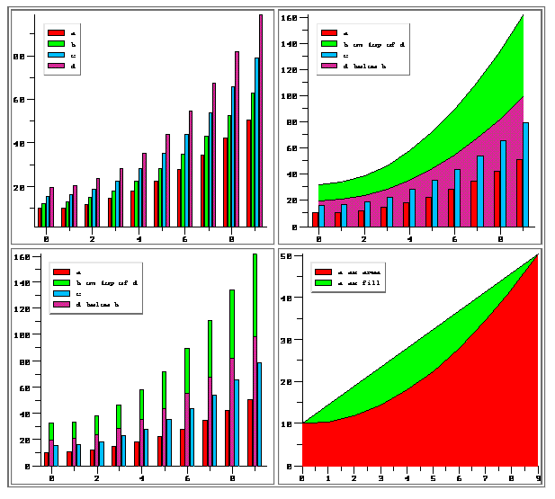
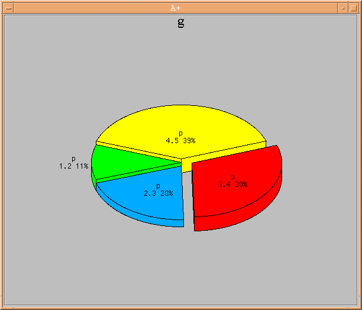

The graph display class enables graphical representation of data in a variety of styles and formats, and interactive manipulation of that data. This class is a container class. A graph is represented by a global variable whose value is a scalar or vector of symbols. These symbols hold the names of other global variables, which are the children of the graph. Graph children have display class graphTrace. This class is automatically given to all children of a graph, and cannot otherwise be set.The children of a graph are called graph trace sets. Each graph trace set can contribute one or more visible traces on a graph. The visible traces will simply be called traces. Some attributes are defined for graph trace sets, such as the colors of the traces, while others, such as the legend layout, are defined for the graph itself.
Some major features of a graph are shown in the first figure. Included are three traces, a title, subtitle, axes without rule lines, axis labels and x-axis sublabels, and a legend. The overall arrangement of a graph is fixed, but otherwise what appears in the figure can be set by means of the appropriate attributes.

There are various styles for the visible traces, including bar graph, pie chart, candlestick, and high-low, and a variety of ways users can interact with graphs, including zooming, annotating, and adjusting data points. The attributes available to a programmer for monitoring and controlling user interactions are described in this chapter, in the table "Attributes for Interactions with Graphs"; the user interactions themselves are described in the chapter "User Interactions with Displays", and in particular in "Graph Objects".
This chapter begins with a brief description of the organization of the data to be graphed and the attributes that apply directly to this data. Among these attributes is style, by which the appearance of the graph is specified. Descriptions of the major components of a graph and their associated attributes follow. The chapter concludes with sections on attributes associated with user interactions and miscellaneous attributes.
A graph trace set is either a numeric vector or a numeric matrix with at least two columns. The vector form, for a vector v, produces a single trace with x-coordinates É#v and corresponding y-coordinates v or a pie chart with areas proportional to the elements of v. The matrix form produces one or more traces, with the first column containing the x-coordinates for all traces in the set. The remaining columns can represent one or more individual traces, such as lines or scatter charts, or one trace that requires more than one y-coordinate for its definition, such as a candlestick. A one-row, two-column matrix is used for a text trace, specifying the position of the lower left corner of the text. The text itself is specified as the title attribute of the trace set.For performance reasons, when dates of the form yyyymmdd or mmdd appear in the data, they are considered as numbers, not parsed as dates, resulting in a distorted graph, unless the dates are all in the same month. If you convert the dates to Unix seconds, they will be properly distributed.
Trace set attributes are defined for trace sets, as opposed to the graphs themselves. They are nonpersistent: they disappear when a trace set is freed. They are all functional (see "Functional Attributes"). Each can be set to either a scalar value that applies to all traces, or a vector of values, one for each trace. A summary can be found in the table below. A detailed discussion of each attribute except barwidth follows the table.
The fillcolor attribute specifies the color used to fill the regions of a bar, pie, stack or area trace, and the color of the symbols of a scatter plot. The default fillcolor value is the value of the linecolor attribute; thus, in the absence of a fillcolor setting the bars appear as a solid rectangle. With a fillcolor different from that of linecolor, the bars appear with a border drawn in the linecolor value. The default behavior for fill coloring is described in the table above.
If the gradient attribute has the value 1, then the colors of symbols in a scatter plot and bars in a bar graph are obtained by cycling through the colors listed in s.FILLCOLORS. If the attribute has been assigned a function, that function is called for every scatter point or bar.
The legend attribute controls the text that annotates the trace segments in the legend. The default is the name of global variable that contains the trace set. If the variable for a trace set is a matrix, then the name is supplemented by ":n", where n is 0, 1, ... . For example, if the global variable name is x, then the annotations are "x:0", "x:1", and so on.
The linecolor attribute specifies the color of the line segments in line, line-scatter, step, step-scatter, and segment traces, and the color of the borders of area, fill, pie, and stack traces. The default behavior of linecolor for these trace styles is described in the table above.Up to four colors are meaningful for candlesticks and open-high-low-close graphs. In the case of a candlestick graph, the first color specifies the fill color of the candle when the open exceeds the close, the second is the color of the vertical lines segments, or wicks, the third is the candle border, and the fourth is the fill color of the candle when the close exceeds the open. When there is only one linecolor for a candlestick graph, it is used to fill the candle when the open exceeds the close, and the candles are hollow when the close exceeds the open. See the table "Attributes for Text Areas of Graphs".
For open-high-low-close traces, the first color specifies the color of the open ticks, the second is the color of the vertical line segments, the third is unused, and the fourth is the color of the close ticks. The default is to use the line color for all three colors. See the table just mentioned. If fewer than four colors are given they are used cyclically, in the manner of the primitive function Reshape. There are several cases for each of the styles high-low-close, high-low, and close, due to the fact that the data for these styles can have several different formats (i.e., number of columns). See the table "High-low Family; Data and Line Colors".
The basic linestyles are `solid, `dash, `dot, and `dotdash. In addition, `dot1 through `dot5 can be used for various intervals between dots, with `dot1 the smallest interval, `dot5 the largest, and `dot3 the same as `dot. Analogously, there are `dash1 through `dash5, where the dash length varies and `dash is between `dash2 and `dash3, and `dotdash1 through `dotdash5. When there is more than one trace set, the default assigns the basic styles in the order given above to the individual traces in each trace set. If there are more than four traces in a trace set, these styles are repeated as needed. When there is only one trace set, all the traces are `solid. This attribute applies to line, linescatter, and pie traces, as well as to trace sets with styles open-high-low-close, high-low-close, high-low, and close.
The linewidth attribute specifies (in pixels) the width of the line segments in line and linescatter traces, and the high-low style family of traces, and the outlines in pie charts. Line width is limited to 35, even if a higher value is set. Note: a significant performance penalty occurs on Sun Sparc workstations for line and linescatter traces with linewidths greater than 1 and more than 100 data points, due to system limitations. However, the various high-low style graphs look better with line segments wider than the default. See the figure "Various Line and Scatter Trace Styles", where all the graphs have line width 3.Note: the linewidth setting for candlestick and the various high-low graphs is not used if it would cause the individual figures to overlap.
The symbol attribute is used to specify the symbol used in a scatter plot. The values for the various symbols are:`circle, `circlefilled, `cross, `diamond, `diamondfilled, `square, `squarefilled, `star, `triangle, `trianglefilled, `xsym.If the value is any other symbol or a character vector, the text of that value is used for the symbol; the font in which a text symbol appears is specified by the font attribute of the trace set variable.
The size, in pixels, of the symbol in a scatter plot.
The style of the traces in a trace set, specified as one of the symbols in the table "Trace Styles, Data Format, and Attribute Applicability". See "Trace Styles".
The xaxis attribute specifies whether a trace is plotted against the default x-axis at the bottom of the plot area or the alternate x-axis at the top; analogously, yaxis specifies whether the default y-axis on the left is used, or the alternate y-axis on the right. The alternate axes do not normally appear unless at least one trace is associated with them; see, however, the axis attribute.
The graph display class supports a variety of trace styles that are summarized in the following table. Included in this table is a cross reference indicating the applicability of the trace attributes discussed above. In addition to the table summary, a discussion and sample graphs of each style follow.
Trace Styles, Data Format, and Attribute Applicability
The attributes pertain to graphTrace objects. An x indicates that the column's attribute is meaningful for the row's trace style.Trace Style Value of style Attribute Data Format fill-
colorline-
colorline-
styleline-
widtharea `area vector, matrix x x x x bar `bar vector, matrix x x candlestick `candle n x 5 matrix x more x x close `c or `close vector, n x 2 - n x 5 matrix x more x x color profile `colorprofile vector, n x 2 - n x 5 matrix x x more x x fill `fill vector, matrix x x x x high-low `hl vector, n x 3 - n x 5 matrix x more x x high-low- close `hlc vector, n x 4 - n x 5 matrix x more x x line `line vector, matrix x x x linescatter `linescatter vector, matrix x x x x market profile `marketprofile vector, n x 2 - n x 5 matrix x more x x none ` or `none any valid trace open-high- low-close `ohlc n x 5 matrix x more x x outline `outline vector, matrix x x x x pie chart `pie vector x x x x scatter `scatter vector, matrix x x segment `segment vector, matrix x x x stack `stack vector, matrix x x x x step `step vector, matrix x x x stepscatter `stepscatter vector, matrix x x x x text `text 1 x 2 matrix
bar
The bar trace style displays trace data as a bar graph. The barwidth attribute (see the table "Miscellaneous Attributes for Graphs") specifies the maximum width for each bar. If a space limitation exists, the actual bar width is adjusted to fit within the available space. When there is a space limitation and the adjusted bar width is less than a threshold value, the border is dropped from the bar display and only the fill color appears.The fillcolor and linecolor attributes are used to set the colors inside the bars, and the bar border colors, respectively. The linestyle and linewidth attributes have no effect on bar graphs.
The second figure shows a series of graphs with an increasing number of bar style traces in each successive graph. These graphs illustrate both the positioning of the bars on the x-axis relative to the x-value, and the effects of space limitation on the bar width. With each additional bar, the bar width is adjusted to fit within the available space while maintaining the same relative spacing. Notice that the borders around the bars eventually disappear.
A Series of One to Six Bar Traces

line
The line trace style is the default trace style and consists of line segments connecting consecutive data points. See the figure immediately below.
Various Line and Scatter Trace Styles

scatter
The scatter trace style uses a symbol (the default is a cross) to indicate the location of each data point in a trace. To produce scatter plots with small dots, set the trace symbol to `circlefilled and the `symbolsize to 3 (a smaller size will not be shown). See "fillcolor" for a discussion of fill colors and this trace style. See the previous figure.
linescatter
The linescatter trace style is a combination of the line and scatter style traces; the trace is an ordinary line graph, but in addition scatter symbols mark each data point. See the previous figure.
step and stepscatter
The step trace style is a variation of the line style that replaces each line segment with a step consisting of a horizontal and a vertical segment. The stepscatter trace style is the analogous variation of the linescatter style. See the previous figure.
segment
The segment trace style is a variation of the line style that permits a series of disconnected line segments to be specified in one trace. The line segments are every other one of those in a line graph. See the previous figure.
candle, ohlc, hlc, hl, c, marketprofile, colorprofile
The high-low family of trace styles can accept data in a variety of formats, which are summarized in the table "High-low Family; Data and Line Colors". With these flexible trace formats, it is possible to display any of the following graph styles without changing the underlying data: open-high-low-close, candlestick, high-low-close, high-low, close, market profile, and color profile. All these styles can be assigned to five-column trace sets.Analogously, the following subset can be assigned to four-column trace sets: high-low-close, high-low, and close; to three-column trace sets: high-low and close; to two-column and vector trace sets: close, market profile, and color profile.
For these traces the linewidth attribute specifies the maximum width of line segments, if sufficient space is available. See the following figure.
Various Trace Styles Based on the Same Data

High-low Family; Data and Line Colors
Keys: x: x coordinate; u: unused; v: vertical line segment color; c: close tick color; t: trace color.Trace Style Trace Set Data Column Index linecolor Index 0 1 2 3 4 0 1 2 3 ohlc, candle n x 5 matrix x open high low close See "linecolor" hlc n x 5 matrix x open high low close u v u c n x 4 matrix x high low close v u c hl n x 5 matrix x open high low close u v u u n x 4 matrix x high low close v u u n x 3 matrix x high low v u color profile, close, market profile n x 5 matrix x open high low close u u u t n x 4 matrix x high low close u u t n x 3 matrix x high low u t n x 2 matrix x close t vector close t
text
Text traces are positioned on a graph by specifying the coordinates of the lower left corner of the bounding box of the text. The trace set for a text trace is a 1 by 2 matrix holding these coordinates as an (x, y) pair. The text that appears on the graph is the value of the title attribute of the trace set variable; the trace's titlefg attribute applies to the text unless its textfg attribute has been set, and likewise for titlefont and textfont. The text "All Six Traces" on the lower right graph of the bar trace figure is a text trace.Text traces do not appear in the graph legend and are superimposed on top of the other traces.
none
A trace on a graph can be hidden from view by setting its style attribute to `none or to the empty symbol (` ), and restored by resetting this attribute to any other appropriate value.
area
All traces with this style are accumulated in one visible trace. If there is only one trace with this style, its graph is the filled-in region bordered by the x axis and the line graph which this trace would form if its style were line. The lower region in the lower right graph in the figure "Various Stack and Area Graphs" is such a graph. If there is more than one trace with this style, the graph is a set of filled-in regions, stacked one above the other. See the filled-in regions in the upper right graph of the figure just mentioned, and compare that graph to the one on the lower left; they differ only in that both traces with style stack in the lower left have style area in the upper right.
fill
If a trace of this style is drawn as a line trace and the first and last points are connected, the result is the border of a closed region. If the style is fill that region is filled-in with the fillcolor. See the lower right graph in the stack and area figure, where the top region has style fill, the bottom region has style area, and their trace sets are equal.
stack
All traces with this style are accumulated in one visible trace, which appears to be a set of bar graphs, stacked one above the other. In fact, those individual bar graphs can be seen by setting the style of all traces with style stack to style bar. See the lower left graph in the stack figure, and compare it to the upper left.
Various Stack and Area Graphs

pie
Only y values are significant for pie charts, which are not graphed against a coordinate. Hence there are no x values, and only a vector is used for a `pie trace. In the absence of other traces in the graph, you might want to set the `axis attribute to `none, as has been done in the pie-chart figure. The attributes specifically for pie charts are shown in the following table.pû1.2 2.3 3.4 4.5 ã Set points for the graph gû`p ã Set up graph `g is `graph ã Establish class `p has (`style;`pie) ã Establish style `g has (`axis;`none; ã Turn off x-y axis display `xs;602;`ys;496; ã Set size of window (x-size and y-size, in pixels) `pieoffsetmargin;0.35) ã Set minimum space between text and edges of pie `p has (`pievaluealign;`bottom; `piepercentalign;`bottom) `p has (`linecolor;`black;`textfg;`black) ã Set colors for pie borders and text `p has (`pieoffsets; 0 0 0.15 0; ã Pull out one slice `fillcolor; `green `deepskyblue `red `yellow; ã Slice colors `pieprofiles; 0.75 0.5 1 1) ã Slice thicknesses show `g
A Pie Chart 
The basic order in which traces are drawn is the index order of the graph trace variables in the graph variable, and within each graph trace variable, the index order of the columns. (This order may be changed without freeing the trace variables.) The traces appear in the legend in this order, starting at the top in vertical legends. When multiple bar graphs have common x-coordinates, they are drawn from left to right in this order, clustered near that common value. Stack and area graphs are drawn from top to bottom in this order. All area and fill traces are drawn in this order before traces of any other style are drawn; all bar and stack graphs are then drawn in this order; all remaining traces other than text traces are then drawn in this order; finally, all text traces are drawn in this order. Trace search order is the same as the order in which traces are drawn.
The text areas of a graph are its title, subtitle, footnote, and axis titles. The title and subtitle areas are illustrated in the first figure. The title appears at the top of the graph. The subtitle appears below the title, and the footnote appears below the x-axis at the bottom of the graph. Any of the three can have one or more lines, their text can be justified, and their color and font can be specified.The x-axis title appears under the x-axis labels and sublabels; the y-axis title appears at the top of the y axis. See the table "Axis Attributes for Graphs".
The legend appears automatically on a graph. Its default arrangement is vertical, but it can be also be aligned horizontally; see the legendstyle attribute in the table "Legend Attributes for Graphs", and see the bar trace figure for examples. The text that annotates each trace sample is specified using the trace set attribute named legend. The position, or justification, of the legend is specified using the graph attribute named legend. This position can be within the plot area, i.e., the area within the axes, or it can also be outside the plot area. The legend can be removed by setting the graph legend attribute to `none.
Legend Attributes for Graphs
These are all attributes of graph objectsAttribute Description Data Format Default Value legend Position of the legend in the plot area or outside it. Values are: `bc, `bl, `br, `tc, `tl, `tr; `none (removes the legend).
Inside: `bottom, `center, `left, `horizontal, `inside (centered both ways), `right, `top, `vertical; Outside: `outside, `outsidehorizontal, `outsidevertical. (xlegend and ylegend, if set, always take precedence over legend, but setting legend clears - unsets - them.) symbol vector
`left `top `insidelegendbg The background color of the legend. symbol or string gray legendfg The foreground color of the legend. symbol or string black legendfont The font of the text in the legend. The legend symbol size depends upon the font size. string lucidasans typewriter-10 legendhlthickness The thickness of the legend highlight area, in pixels. numeric 1 legend shadowthickness The thickness of the legend shadow area, in pixels. numeric 1 legendstyle The style of the legend: vertical (`ver), horizontal (`hor), horizontal with the last trace values (`lastvalue), or not at all (`none) (see the bar trace figure).
The last values are those associated with the element or row with the largest index for each trace set.symbol `ver xlegend,
ylegendThe x, y coordinates of the upper left corner of the legend when the legend attribute of the graph is set and has not been cleared by a later setting of legend. numeric 0, 0
The axes of a graph have the most attributes of the various components. For convenience, the descriptions appear in three tables, one for axes in general ("Axis Attributes for Graphs") and the other two for tick marks and tick labels specifically ("Axis Label and Tick Mark Attributes for Graphs", and "Attributes That Assist in Specifying Tick Marks and Labels"). Many of the axis-related attributes have more than one version, corresponding to more than one axis; the convention for their names is presented next.
Graphs have a default set of axes, with the x axis bordering the bottom of the plot area and the y axis bordering on the left. In addition, an alternate x axis can be drawn on top of the plot area, and an alternate y axis on the right. These alternate axes are referred to as the X axis and Y axis, as opposed to the default x axis and y axis.These additional axes can be used purely for appearance, either supplementing or replacing the default axes, or they can be used to plot traces with different scales on the same graph (see the trace attributes xaxis and yaxis).
These axes have independent attributes, such as color, and the names of the attributes are prefixed with "x" to indicate the default x axis, "X" the alternate x axis, i.e., the X axis, "y", and "Y". For example, in the case of foreground color, the four attributes are xfg, Xfg, yfg, and Yfg. To save space in the tables, the four attributes may appear in shorthand notation, like x/X/y/Yfg for the four color attributes.
These attributes determine the appearance of the axes and grid lines.The standard axis style is specified by the value `std for the axis attribute; see the bar trace figure. The value `std for the axis attribute has the property that when any of the xaxis or yaxis attributes of any trace is set to an alternate axis, that axis automatically appears. The boxed style, specified by the value `box, additionally has a box around the plot area. Axes are removed by setting the axis attribute to `none. Any combination of default and alternate axes can be used by setting the axis attribute to a symbol value containing the appropriate letters x, X, y, and Y (in any order).
The rules on the axes, which are the straight lines that run lengthwise, can be specified separately. For example, the boxed style can be obtained by setting the axis attribute to `xy and the rule attribute to `xXyY. When the rule attribute is set to `axis, its value is effectively the same as that of the axis attribute.
In addition, grid lines can be drawn at the major tick marks on axes by setting the grid attribute.
These attributes provide complete control over the placement of tick marks, the text of their labels, their lengths, and the widths of their associated grid lines. A complete specification for any of them is a nested vector of length four, of the form (ticks;labels;sizes;widths), where:
- The i-th element of ticks specifies the location of the i-th tick mark.
- labels is either a nested vector of character vectors or a character matrix whose i-th element or row is the label on the i-th tick mark. (A simple scalar or vector is treated as a matrix with one row.)
Warning! A `null or `symbol item is handled as if it were character and is interpreted as indicating that the default labels, the tick values, should be used! Therefore (see the warning following these bullets) a Null or symbol item can override a character item!
Warning! If fewer labels than ticks are specified, the last of the specified labels is used for them!
- The i-th element of sizes is a number between 0 and 1 which, when multiplied by the value of the majorticksize attribute, gives the length of the i-th tick mark. A scalar is treated as a vector with one element.
- The i-th element of widths is an integer specifying the width, in pixels, of the gridline that intersects the axis at the i-th tick mark. A scalar is treated as a vector with one element.
Warning! A 0 in widths produces a 1-pixel width grid line (although in printing the line may be narrower than one specified by a 1)!
Warning! The first component, ticks, is positional, as you would expect. The other three components, however, are actually interpreted by type, a `char or nested character item being used for labels, a `float item being used for sizes, and an `int item being used for widths! Their order does not matter! In fact, if two or more of them have the same type, then the last is used and the rest (of the same type) are quietly ignored!
Only the ticks are required, and if they alone are specified the ticks vector does not need to be nested. For any of the other three components, if the number of its elements exceeds the number of ticks, the extra elements are ignored. For sizes and widths, if there are fewer elements than ticks, the elements are used cyclically, in the manner of the A+ Reshape primitive function.
The label attributes are functional, giving a way to set the tick marks and their associated values under a variety of dynamic situations, such as scrolling. There are several attributes whose values can be queried but not set which give information that helps in laying out the tick marks and labels; see the table "Attributes That Assist in Specifying Tick Marks and Labels".
Examples of Correct `xlabel Specifications
(`xlabel;) ã Set all to defaults. Labels: values; ticksizes: full (1.); no gridlines. (`xlabel; 2 3 4) ã Ticks at 2 3 4. Defaults for others. (`xlabel;(2 3 4; 3 2Ò"abcdef")) ã Ticks, labels. Defaults for others. (`xlabel;(2 3 4; .4 .6 .4)) ã Ticks and ticksizes. (`xlabel;(2 3 4; 1 2 1)) ã Ticks and linewidths. (`xlabel;(2 3 4; 1 2)) ã Same effect as preceding. (`xlabel;(2 3 4; .5; 2)) ã Ticks, ticksizes, linewidths. (`xlabel;(2 3 4; 3 2Ò"abcdef"; 1)) ã Ticks, labels, linewidths. (`xlabel;(2 3 4;("ab";"cd";"ef"); .7; 1)) ã All.
Zero axes can also appear in a graph. For which axes they are shown, their style, their color, and their thickness are governed by the attributes zero, zerostyle, zerofg, and zerowidth. The table "Axis Attributes for Graphs" gives their ranges of values and their defaults.
Attributes That Assist in Specifying Tick Marks and Labels
These are all attributes of graph objectsAttribute Description x/X/y/Yextent A three-element vector v giving the minimum value for the indicated axis (v[0]), the maximum value (v[1]), and a scale factor (v[2]) such that (v[1]-v[0])«v[2] is the length of the axis in pixels. x/X/y/Ylabelheight The height, in pixels, of any label on the indicated axis, based on the current font. x/X/y/Ylabelwidth The width, in pixels, of a specified label for the indicated axis. The text of the label is given as a character vector, as for example:
(`xlabelwidth;'label text') of `g
where `g is the graph. A vector of character vectors or a character matrix can also be given for the text, and a vector of pixel lengths is returned. In the case of a matrix, the rows are taken as the labels.
There are a variety of interactions with graphs to customize the display, edit and manipulate trace data, perform detailed examination of traces, and navigate through graphs that are only partially displayed. These interactions are described in "User Interactions with Displays", and particularly in "Graph Objects". The following attributes provide the means for programmers to monitor user interactions and control the responses:Data points can be moved interactively (see "Data-Point Move"). Their movement can be restrained to vertical only, so that x coordinates don't change, by setting the movelimit attribute to `x, or to horizontal only by setting it to `y. There are no restraints when it is set to `none.
Miscellaneous Attributes for Graphs
These are all attributes of graph objects.Attribute Description Data Format Default Value barwidth The maximum width in pixels of bars in bar and stack graphs. numeric 10 bg The background color of the graph. string or symbol gray bottom,
top,
left,
rightThe margin width or height of the area consisting of the plot area (the region within the four axis rules, even when some of the rules are absent), axes and labels, and axis titles, as a percentage of the default width or height of that area (a whole number or a fraction, e.g., 20 or 0.20, but only a whole number if in excess of 100%). numeric 0 debug If 1, the A+ processor displays a message every time a graph is redrawn, updated (i.e., the last point on a trace is changed), or printed. integer 0 fg The color of the axes, axis labels, legend titles and the legend border, subtitle, and footnote when their colors have not been explicitly specified. string or symbol black selectdistance The distance in pixels from which a trace data point is selectable for interactive manipulation of its value. numeric 10 shadowthickness The width in pixels of the shadow area (the border) around the graph. Set to 0 for no border. numeric 2 xleft,
xright,
Xleft,
Xright,
ytop,
ybottom,
Ytop,
Ybottomxleft is the left margin of the xy trace area and xY trace area as a percentage of the axis range (a whole number or a fraction, e.g., 20 or 0.20, but only a whole number if in excess of 100%). Analogously, Ytop is the top margin of the xY and XY trace areas, and all the others are similar.
The xy trace area is the region holding traces plotted against the x and y axes. By default it coincides with the plot area. There is also an xY trace area holding traces plotted against the x and alternate y axis, as well as Xy and XY trace areas.numeric 0 xs,
ys,
extentxs, ys: the dimensions of the graph in pixels.
extent: the vector x, y, xs, ys, where x and y are the graph's coordinates in pixels relative to its parent, or to the screen if it is top-level.numeric xs and ys: 200. extent: 0 0 200 200
The keys in the "Table of All Display Attributes" in the "Display Attributes" chapter that pertain to the graph display class are G, ALL, CNFT, NFT, and TOP.The attributes that are meaningful for the graph display class (other than the print... attributes) are:
active The keys in the "Table of All Display Attributes" that pertain to the graphTrace display class are gT and ALL.
addtexttrace
addtrace
ancestors
arrowdown
arrowkeys
arrowleft
arrowlist
arrowright
arrowup
at
atsector
axis
b
barwidth
bg
bottom
bound
children
class
clear
coordinate
Coordinate
copytexttrace
copytrace
deiconized
delete
descendents
doc
downto
dynamic
eval
evaluate
exit
extent
f1-f12
familytree
fg
fkeys
focus
followers
followertree
font
foot
footnote
footnotefont
footnotejustify
freeze
fullscreen
grid
gridfg
gridstyle
gridwidth
h
H
has
head
hide
hl
hlthickness
icon
iconic
iconized
icontitle
incurrentworkspace
is
l
leader
left
leftto
legend
legendbg
legendfg
legendfont
legendhlthickness
legendshadowthickness
legendstyle
literal
lower
mapped
mode
naturalsize
newshow
notify
outofcurrentworkspace
parent
pieoffsetmargin
pin
preset
primary
r
raise
realize
recursively
refer
refresh
reparent
request
reshow
resize
resizeable
right
rightto
rule
rulewidth
script
selectdistance
selected
sensitive
set
settings
shadowthickness
shell
shelltitle
show
state
stateself
subtitle
subtitlefg
subtitlefont
subtitlejustify
syncshow
t
tabfrom
tablist
tabto
title
titlefg
titlefont
titlejustify
top
upto
vcol
vcols
verify
vrow
vrows
w
W
ws
x
X
xextent
xfg
xinc
xlabel
xlabelfont
xlabelheight
xlabeljustify
xlabelout
xlabelwidth
xleft
xlegend
xmajorticksize
xmax
xmin
xminorticks
xminorticksize
xright
xs
xsublabel
xsublabeljustify
xsublabelout
xtickstyle
xtitle
xtitlefg
xtitlefont
xtitlejustify
y
Y
ybottom
ylegend
ymode
ys
ytitlestyle
ytop
yx
YX
yxs
zero
zerofg
zerostyle
zerowidthThe attributes that are meaningful for the graphTrace display class are:
active (Point the mouse cursor to an attribute to display a short description at the bottom of the screen)
ancestors
bg
bound
class
coordinate
doc
f1-f12
eval
evaluate
fillcolor
fkeys
gradient
has
is
legend
linecolor
linestyle
linewidth
movelimit
parent
pieangle
pieaspectratio
piedepthfactor
pielegendalign
pieoffsets
piepercentalign
pieprimaryslice
pieprimaryslicealign
pieprofiles
pievaluealign
preset
protect
protected
refer
referpoint
script
selectable
selected
set
settings
shell
state
stateself
style
symbol
symbolsize
textactivate
textfg
textfont
title
titlefg
titlefont
titlejustify
verify
xaxis
yaxis
| doc@aplusdev.org | © Copyright 1995–2008 Morgan Stanley Dean Witter & Co. All rights reserved. |